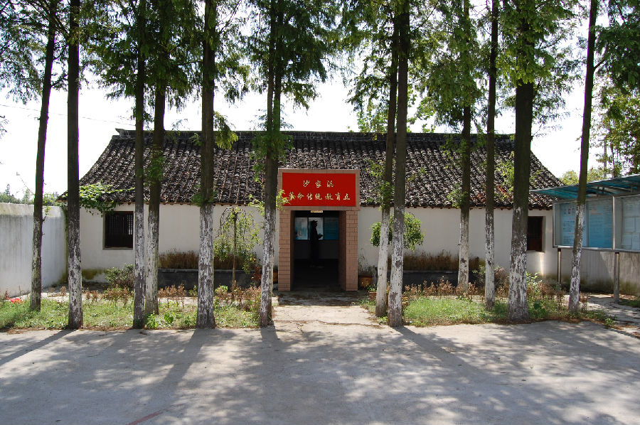

嘉兴市文物保护网 · 市级文物保护点 · 2020-11-06 · 原文

嘉桐工委新塍联络处位于嘉兴市秀州区新塍镇沙家浜村委会所在地旁，原为沙家浜小学校舍，沈如淙（1920~？无产阶级革命家）1939年到沙家浜小学任教，1940年5月加入中国共产党，并成立了在新塍的第一个党小组，以后此处作为党组织活动的联络处。建筑坐南朝北，占地面积100平方米，面阔14米，进深7.2米，高4.3米。砖木结构，屋顶为硬山顶，明间用抬梁式，次间用穿枋式，五檩，前后各单步。四周柱子和梁架上有文革时期标语，正东梁写有“毛主席万岁”、正南柱“从小听毛主席话”、东南柱“永远跟共产党走”、西北柱“学英雄口口”、正西柱“走英雄口口”、西南柱“创英雄口口”、正北柱“毛主席的书要学口，毛主席思想要口口”、正北梁“教育为无产阶级政治服务”、“教育与生产劳动相结合”。嘉桐工委新塍联络处作为新民主主义革命时期中共地下活动的重要旧址，曾涌现出许多优秀的无产阶级革命家，许多关系嘉兴革命前途的重要决策就在此做出，是一处重要的革命文物，具有较高的历史价值。2009年公布为嘉兴市文物保护点。